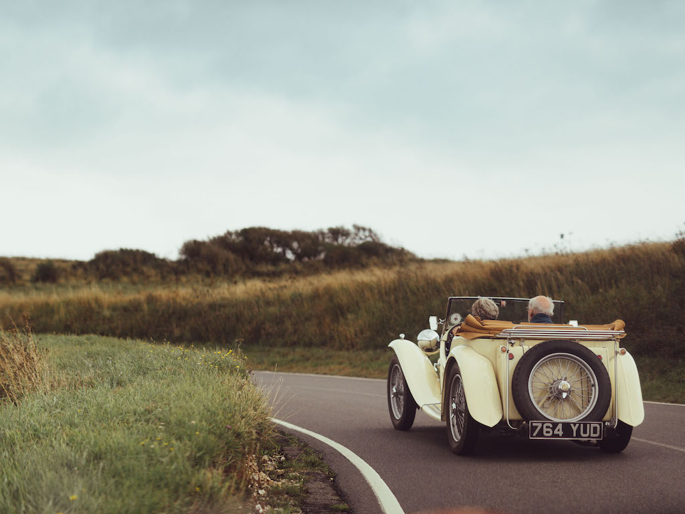

I thought it would be a good idea to record some of the runs on which I took the TC. Many short trips are just over to my Father's at Sompting, or to meet friends for lunch, but some are with other MG or classic car owners.
Going to my Father's house is about a 12 miles round trip, so my journey, on Tuesday 28th July 2015, to Cripps at Storrington to have the brake master cylinder replaced and the return the next day, became my longest journey at 16 miles.
Now that the brakes did not lock on after about eight miles, I took up an invite from Stewart Penfound to visit him in Brighton. So on Friday 7th August I made the 24 miles round trip, gradually extending the range of my journeys.
The next excursion was on Monday 10th August to the West Sussex MG Owners Club meeting at Worthing Rugby Club, a whole 30 miles. In this way I was gradually extending the length of journeys and gaining more confidence in the car.
The rest of the pages give a few details of the major outings in TC4985. Just use the tab to find them.